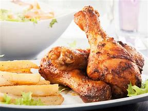

Non Vegetarian's Heaven
Here you can find delightfully delicious, mouth-watering sugestions for Non Veg dishes.
If you are a Vegetarian this page is not for you ! Sorry
Error: You are 'veg', 'veg' not defined.

-
On top of the list of Non Vegetarian dishes Chicken is the first thing to come in our mind
-
-
When you have a spicy meal, a Sweet dish is obviously deserved after it !
-
Looking for Fast Food ?
-